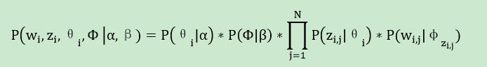

Topic Model-LDA理论篇
一. 几种概率分布
1. Gamma分布
他有一个重要性质，)，对于整数可以得出阶乘形式
2. 二项分布(Binomial distribution)
二项分布是N重伯努利实验，描述发生k次事件的概率分布，可以理解为抛N次硬币k次正面的概率。
3. beta分布(beta distribution)
Beta分布是指一组定义在区间(0,1)的连续概率分布，是对二项分布中p进行建模的概率分布，和二项分布互为共轭，这个后面会给出定义和缘由。有没有觉得二项分布/beta分布形式很像!
Beta分布的期望
4. 多项分布(multinomial distribution)
多项分布是二项分布的推广扩展，在n次独立试验中每次只输出k种结果中的一个，且每种结果都有一个确定的概率p。多项分布给出了在多种输出状态的情况下，关于成功次数的各种组合的概率。这里直观类比为扔骰子就好了。
5. 狄利克雷分布(dirichlet distribution)
dirichlet分布是beta分布在多项情况下的推广，也是多项分布的共轭先验分布，同样的是对多项分布中P进行建模的分布。同样多项分布和dirichlet分布形式也很像。
二. 共轭先验分布(conjugacy prior)
所谓共轭，指我们选取一个函数作为似然函数的prior probability distribution，使得后验分布函数(posterior distributions)和先验分布函数形式一致。比如Beta分布是二项式分布的共轭先验概率分布，而狄利克雷分布(Dirichlet分布）是多项式分布的共轭先验概率分布。为什么要这样做呢？归根结底还是为了推导简单漂亮！
根据贝叶斯公式，后验分布=似然函数*先验分布，如下面公式：
下面以二项分布和Beta分布为例，证明他们互为共轭，多项分布和dirichlet类似。
可以看到后验分布(post distribution)又变为beta分布了。这里超参数α,β称之为伪计数(pseudo count)，表示先验计数对似然计数进行修正，这样后验更精确。
三. 参数估计
参数估计一直存在两个学派：贝叶斯学派和频率学派。频率学派通过似然函数来选择特定参数值；贝叶斯学派认为参数不是固定值也是变量，给参数赋予先验分布，并使得先验与似然共轭，通过求后验均值来得到参数的估计。不管是哪个学派思想，都要用到似然函数，注意到频率学派所使用的似然函数是N次伯努利实验下的似然函数，但贝叶斯学派所使用的似然函数是二项式分布形式的似然函数
当数据量无限大时，贝叶斯方法和频率学派方法所得到的参数估计是一致的。当在有限的数据量下，贝叶斯学派的参数后验均值的大小介于先验均值和频率学派方法得到参数估计之间。
四. LDA推导
1. 概率图模型表示
隐含狄利克雷分布（Latent Dirichlet Allocation, LDA）是一个三层贝叶斯生成模型，它把PLSI模型的参数文档-主题/主题-词分布也看做随机变量，并采用Dirichlet分布作为先验。如下图所示，LDA的三层结构被三种颜色表示出来：
1). 语料层（红色）：α和β表示语料级别的超参数，每个文档都一样，被整个语料共享。
2). 文档层（橙色）：θ是文档级别的变量，每个文档对应一个θ，每个文档产生各个主题z的概率是不同的，生成每个文档需采样一次θ。
3). 词层（绿色）：z和w都是单词级别变量，z由θ生成，w由z和β共同生成，一个单词w对应一个主题z。
Dirichlet分布是多项分布的共轭先验概率分布，LDA采用服从Dirichlet分布的K维隐含随机变量表示文档的主题混合比例，用一个服从Dirichlet分布的V维隐含随机变量表示主题中词典集的概率分布。在许多应用场合，我们使用对称Dirichlet分布，即各维α相同。其超参数是两个标量：维数K和参数向量各维均值α=(∑α_k )/K。
2. LDA生成文档过程
如LDA概率图模型所示，一篇文档生成的过程如下
1)．从 Dirichlet分布中取样生成文档i的主题混合比例θi，α为Dirichlet分布的参数，也称为“hyperparamer”。
2)．从以θi为参数的主题multinomial分布中取样生成文档i第j个词的主题zi,j
3)．从Dirichlet分布中取样生成主题zi,j的词混合比例φzi,j，同样β也是Dirichlet分布的超参数。
4)．从以φzi,j为参数的词multinomial分布中采样词语，最终生成词语wi,j
整个模型中所有可见变量和隐含变量的联合概率分布为：

最终生成一篇文档的概率可以通过将上式的θi及Φ进行积分并对zi进行求和得到。
3. 贝叶斯推断-Gibbs采样
计算LDA中未知的隐含变量z¬m,n, θ¬m和φk的后验概率是概率图模型的推断（Inference）问题。主要的算法分为精确推断和近似推断两类。LDA用精确推断解起来很困难，所以一般采用近似推断来学习隐含变量。比如LDA原始论文[Blei 2003]中使用的mean-field variational EM算法和[Griffiths 2002]使用的Gibbs采样（Gibbs Sampling），其中Gibbs采样更为简单精确。
Gibbs采样（Gibbs Sampling）是一种Markov Chain Monte Carlo算法，通过生成一个观察样本序列来逼近多变量的联合概率分布，其基本思想是使用一个马尔可夫链条，sample出一系列的状态点，使其最终的平稳分布状态就是我们给定的那个联合概率分布（该联合概率就是LDA里的文档集被生成的概率）。该算法每次选取联合概率的一个变量维度，根据其他变量值采样当前维度变量值(完全条件概率，full conditionals)。不断迭代该过程，直到收敛。
整个文本训练集生成的联合概率为，有了联合概率分布，紧接着就可以推导full conditionals
有没有觉得full conditionals公式很漂亮？而且含义很直观，其实就是p(topic|doc)*p(word|topic)，这个就是doc->topic->word产生式路径，amazing!
gamma函数的出现有两个作用：换掉积分；在分子分母同时出现gamma函数时利用gamma是阶乘的特性，而约去。
做完多次主题采样后，假设这是已经进入细致平稳状态，根据后验期望作为参数估计，就可以得到θmat(doc->topic)和φmat(topic->word)两个重要的矩阵，至此隐变量推断就完成了！
根据上面推导，Gibbs采样推断LDA隐变量分布的算法伪代码如下：
1). 初始化：首先对整个语料所有词遍历一遍，为其随机分配一个主题，即zm,n=k~Mult(1/K),其中m表示第m篇文档，n表示文档中的第n个词，k表示主题，K表示主题的总数。然后将对应的m文档中k主题出现的词个数、m文档的词总数、k主题对应的词t个数、k主题对应的总词数（ n(k)m, nm, n(t)k, nk）分别加1。
2). 采样过程：遍历整个语料的所有词，假如当前文档m的词t对应主题为k，则n(k)m, nm, n(t)k, nk分别减1，即先拿出当前词t。然后根据计算出的Gibbs updating rule，采样出新的主题k’，在对应的n(k’)m, nm, n(t)k’和nk’上分别加1。P(zi|z-i,d,w)称为Gibbs updating rule，即排除当前词的主题，根据其他词的主题估计当前词分配各个主题的概率。
3). 重复迭代2 采样过程。
4). 迭代终止后（主题分布和词分布收敛或到达最大迭代次数）输出文档-主题分布θ和主题-词分布φ：
采样过程对应的C++代码如下：
其中821-831行对应轮盘赌法，求得新采样的主题编号k’。注意812和837行其实是可以省略的，因为前后p[k]的相对比例不变，经过825归一化概率相同。825行有out of bound风险，应改为RAND_MAX+1，这个下一篇会详细说。
4. 复杂度分析
1). 时间复杂度：Collapsed Gibbs Sampling LDA每次迭代都要把语料所有词属于K个主题概率采样一遍，因此每轮迭代循环数是doc_num * per_word_num * K = corpus_word_count *K，所以最终的时间复杂度=O(iter_num * corpus_word_count * K)。
2). 空间复杂度：算法运行中需要保存几个数组，耗费空间最多的有两个nw和nd，其中nw占用内存空间最大=主题数K * vocabulary_size，所以算法的空间复杂度=O(K * V)。
五. 参考资料
1). David M.Blei & Andrew Y.Ng. Latent Dirichlet Allocation
2). Gregor Heinrich. Parameter estimation for text analysis
3). 靳志辉(Rickjin). LDA数学八卦 2013.2.8
4). 马晨. LDA算法漫游指南